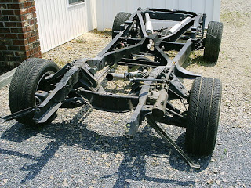
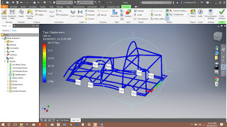
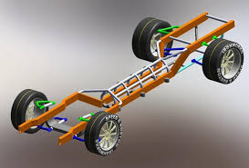

How are car chassis manufactured?An automobile is a composition of all small monologue mechanical component in a frame known as chassis. Chassis is the backbone of the whole vehicle it supports all the accessories to one place making it a comfortable ride. During a production of any vehicle the firs and foremost procedure is the design of the chassis.
The overall frame of an automobile is known as chassis. All the components are mounted on this frame known as chassis. Design of chassis in vehicles of different models vary according to their size and shape.Before the manufacturing of the chassis of an automobile system various different calculations are done so that proper parameters can be maintained for the load, factor safety and many more. Whilst adequate durability under dynamic conditions is a design requirement for the vehicle structures, the static load cases cannot be disregarded. The values for the individual load cases are taken from the expected service conditions of the particular vehicle. The worst-case loading conditions (distribution of the load) as well as overloading must be considered for the static load case. The factors usually applied to the static load case, especially for those vehicles with a long overhang containing concentrated loads (e.g., rear engine buses). Such loads result in high bending moments over the rear axle.
 
After the modeling of the frame this design is further processed through simulation application via the ANSYS software. ANSYS software provides a platform for various different simulation of different components. FEM(Finite Element Method) is used for the longitudinal and cross sectional member of the chassis.The advantage of using shell element is that the stress
details can be obtained over the subsections of the chassis as well as over the complete
section of the chassis. Beam elements are used to simulate various mounting over the frame, like : engine mounting, transmission mounting, tank mounting etc. Spring elements are used for suspension. Stress in various location of the frame are also obtained through this software which are compared with the external observations and data. If the observations are not correct the design is optimized to meet the standard requirements. After the correct results form simulation the design is further processed for manufacturing. The material used for the construction of the chassis is usually carbon steel, but it is also becoming more commonplace that they are made up of aluminum alloys considering its light-weight characteristic. The chassis comprises of several I, C and U sections of steel. Chassis are manufactured with the help of various CNC machines operated by humans in manufacturing companies. |